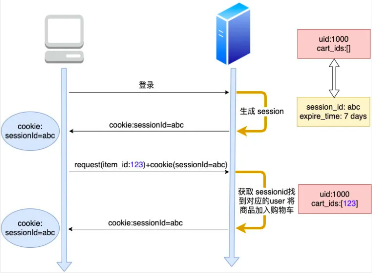
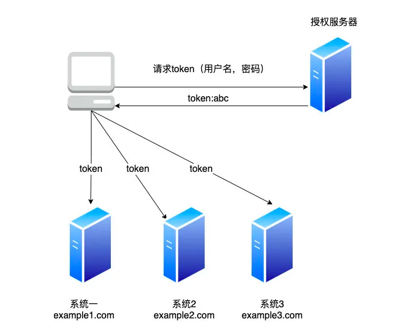

概述
- 本篇总结
cookie、session、token的一些原理和实践经验
1 为什么会出现cookie
- 众所周知，HTTP 是一个无状态协议，所以客户端每次发出请求时，下一次请求无法得知上一次请求所包含的状态数据，如何能把一个用户的状态数据关联起来呢？
-
比如在淘宝的某个页面中，你进行了登陆操作。当你跳转到商品页时，服务端如何知道你是已经登陆的状态？
-
1 首先产生了
cookie这门技术来解决这个问题，cookie 是 http 协议的一部分，它的处理分为如下几步： -
- 1.1 服务器向客户端发送 cookie。
-
-
- 1.1.1 通常使用 HTTP 协议规定的 set-cookie 头操作。
-
-
-
- 1.1.2 规范规定 cookie 的格式为 name = value 格式，且必须包含这部分。
-
-
- 1.2 浏览器将 cookie 保存。
-
- 1.3 每次请求浏览器都会将 cookie 发向服务器。
-
2 其他可选的 cookie 参数会影响将 cookie 发送给服务器端的过程，主要有以下几种：
-
- 2.1 path：表示 cookie 影响到的路径，匹配该路径才发送这个 cookie。
-
- 2.2 expires 和 maxAge：告诉浏览器这个 cookie 什么时候过期，expires 是 UTC 格式时间，maxAge 是 cookie 多久后过期的相对时间。当不设置这两个选项时，会产生 session cookie，session cookie 是 transient 的，当用户关闭浏览器时，就被清除。一般用来保存 session 的 session_id。
-
- 2.3 secure：当 secure 值为 true 时，cookie 在 HTTP 中是无效，在 HTTPS 中才有效。
-
- 2.4 httpOnly：浏览器不允许脚本操作 document.cookie 去更改 cookie。一般情况下都应该设置这个为 true，这样可以避免被 xss 攻击拿到 cookie。
2 为什么会出现Session
- 1 cookie 虽然很方便，但是使用 cookie 有一个很大的弊端，cookie 中的所有数据在客户端就可以被修改，数据非常容易被伪造，那么一些重要的数据就不能存放在 cookie 中了
-
2 而且如果 cookie 中数据字段太多会影响传输效率。为了解决这些问题，就产生了 session，
session 中的数据是保留在服务器端的。 cookie中只存储session_id(或者是sid之类的) -
当你浏览一个网页时，服务端随机产生一个 1024 比特长的字符串，然后存在你 cookie 中的
sid字段中。当你下次访问时，cookie 会带有这个字符串，然后浏览器就知道你是上次访问过的某某某，然后从服务器的存储中取出上次记录在你身上的数据。由于字符串是随机产生的，而且位数足够多，所以也不担心有人能够伪造。

- 对服务器来说,session 可以存放在
-
- 1）内存
-
- 2）cookie本身
-
- 3）redis 或 memcached 等缓存中
-
- 4）数据库中。
-
- 线上来说，缓存的方案比较常见，
3 为什么会出现Token
- token的目的是：
no session - token的优势：
-
- token信息里面包含了
用户ID、服务器签名信息。因此客户端这边发送请求时，都在Header里面带上Token信息，不同的服务器都能够知道该用户是谁。而且服务端如果有多台机器，无需部署Redis等中间件.
- token信息里面包含了
- 最常用的场景： 中心化认证。
- 公司有中心的认证系统，叫Auth，每次用户先从Auth系统那边拿到AuthToken
- 用户请求其他系统（比如公司的CMDB系统，公司的Workflow系统）时，都在Header里面带上AuthToken。其他系统再去Auth系统那边校验：该AuthToken是否处于有效期内，如果有效，Token里面也说明该用户的用户ID
Cookie 与 Token 的简单总结
-
Cookie 有哪些局限性？
-
- 1、 Cookie 跨站是不能共享的，这样的话如果你要实现多应用（多系统）的单点登录（SSO），使用 Cookie 来做需要的话就很困难了
画外音: 所谓单点登录，是指在多个应用系统中，用户只需要登录一次就可以访问所有相互信任的应用系统。
-
- 2 但如果用 token 来实现 SSO 会非常简单，如下

-
- 2.1 只要在 header 中的 authorize 字段（或其他自定义）加上 token 即可完成所有跨域站点的认证。
-
- 2.2 在移动端原生请求是没有 cookie 之说的，而 sessionid 依赖于 cookie，sessionid 就不能用 cookie 来传了，如果用 token 的话，由于它是随着 header 的 authoriize 传过来的，也就不存在此问题，换句话说token 天生支持移动平台，可扩展性好.
token和session的比较
- 原本要放到客户端那边的数据较少的时候，直接使用cookie就可以。但是随着数据量增大，就不得不用session。因此session是大厂标配，例如淘宝、京东等网站
- token则更适合在公司内部系统之间，进行API调用时的认证，推荐设置一个比较短的有效期
- 相同点：
-
- 都是为了表明用户ID、给用户提前加载好一些数据
4 CSRF攻击介绍
- 中文名称叫：跨站攻击
- 简单来说：
-
- A网站，你刚刚登录过，有A网站的cookie，cookie里面有用户的sessionID
-
- 此时用户访问B网站，B网站正常来说和A网站没有任何关系，但是B网站为了牟利，潜入了A网站的一些重要链接（比如A网站刚好时银行网站、里面有一个接口是用户转账的接口，只要请求该接口，就可以实现转账），此时用户明明在浏览B网站，却不知不觉的触发了一些A网站的操作或者流程。
-
- 为什么呢？因为对于相同域名的请求，如果该网站有设置cookie，那么每次浏览器发起请求时，都会带上相应的cookie，这是一个浏览器机制。
-
- 如果是使用Token机制，则不会出现跨站攻击。
-
但是
Token和Cookie其实本质上都存储在客户端（文件系统也好、内存也好），其实都是可能被修改的。如何确保其安全性呢？就是确保传输过程的安全，传输过程使用https进行传输。这也是为什么Google浏览器，打开一个https页面，默认不允许跨域请求。除非被跨的那个网站。 -
Access-Control-Allow-Originis a CORS (Cross-Origin Resource Sharing) header. When Site A tries to fetch content from Site B, Site B can send an Access-Control-Allow-Origin response header to tell the browser that the content of this page is accessible to certain origins.